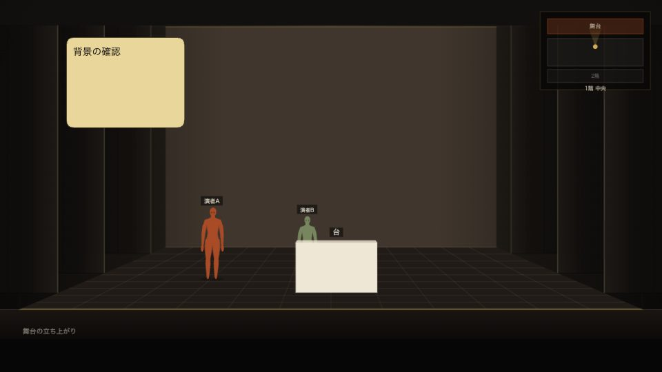

識別方法の提案 · 製品UIは変更していません · 2026年9月10日
同じ舞台スケッチ。用途がひと目で分かる。
おすすめは、書体と舞台図を共通にし、用途の帯・識別アイコン・色を製品ごとに固定する方法です。本家の着せ替えを変えても、この印は変えません。
ショー編集
Stage Sketch
配置・場面・照明を組み立てる
駒・照明舞台装置タイムライン保存・共有
事前確認・自分用メモ
Stage Sketch Viewer
公開されたショーを見て、自分の準備をする場面を見るペン・個人メモオーナーへ共有
模式図です。帯の高さ・アイコン・言葉は提案で、採用済みではありません。サンプル画像と書体は共通にしています。
一番大切な差：本家では「ショーを編集」、Viewerでは「自分用メモを書く」。Viewerにもペンがあるため、「書き込み不可」という表示にはしません。
色だけの変更は、本家の着せ替えと重なる可能性があります。全面を白くする案は強く区別できますが、暗い稽古場での使いやすさや現在の雰囲気も変わります。まずは用途の帯と識別図形を固定し、通常画面・全画面・スマホ・タブのアイコンへ一貫して出す方向を推奨します。
方向性を選ぶ（このページ内だけに保存）
未選択
選択しても製品変更・公開・外部送信は行いません。具体的な色味・印の分かりやすさは次の比較で判断できます。